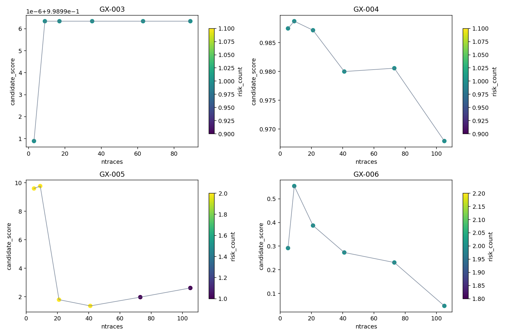
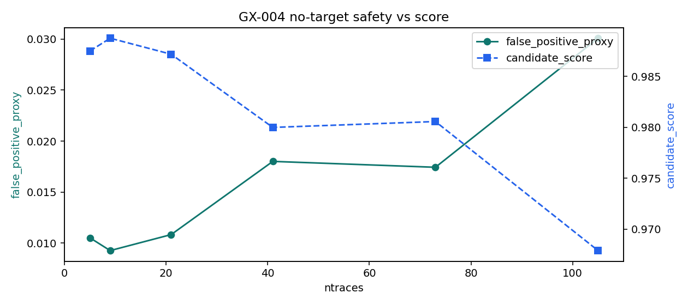
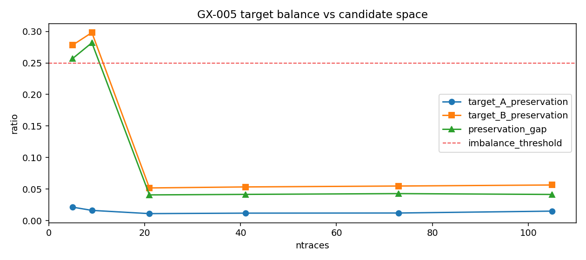
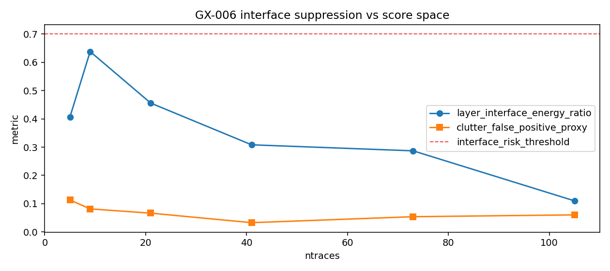

AT-016 Risk-flag and Scoring Diagnostics
Source commit:
9e0a0c2001cdbc61d67015a37d9dabaf66455a3cDiagnostic base:
AT-014_multi_scene_metric_fidelity_validationGate status:
blockedAT-014 rerun:
FalseScoring changed:
FalseActive risk flags
- gx005_target_imbalance
- gx006_interface_suppression
- synthetic_thin2d_scene_limit
Scene best candidates (from AT-014 base)
- GX-003: label=local n=9
- GX-004: label=local n=9
- GX-005: label=local n=9
- GX-006: label=local n=9
Interpretation
Current issue is not explained by score ordering alone. Ranking and risk gate are intentionally separate; blockers indicate candidate-space and scene-safety constraints remain unresolved.
Recommended immediate next task: AT-017 scoring/risk-penalty refinement (diagnostic design first, no semantic scoring switch yet)



